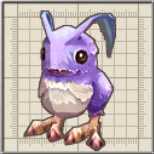
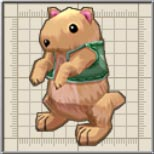
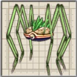
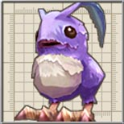
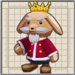

| 名前 |
画像 |
レベル |
HP |
フード |
メモ |
| またんご |
|
7 |
987 |
シュウマイ |
叩くと胞子をまきちらすキノコ人間。普通のキノコにまぎれてしまう。 |
| けさらん |
 |
7 |
987 |
シュウマイ |
丸いウサギに似た魔物。非常に臆病で、近づくと逃走を図る。
煉獄では逃げるけさらんから気づかぬうちにダメージを食らうことがあるので要注意です。ペットショップにいるくらいなので、拡張パッチでペットとして使えるようになればいいのですが。 |
| もりこぼると |
 |
8 |
2029 |
しめじ |
森の中に住処を移したこぼると。通常より手先が器用で、日曜大工が趣味。
シルクハットをかぶっている場合も。コボレンジャー隊員の一人で、なおかつ「でくぼっと」の搭乗員。 |
| ちゃりおっと |
|
12 |
3522 |
生ハム |
こぼるとが操縦する、こだわりの木製戦車。武器の類は積んでいない。
こぼるとが乗るだけでなく、大砲だけがのっていたり、二人乗りをしたりと使い方にバリエーションがあります。 |
| ぴーまん |
|
6 |
686 |
キウイ |
水をあげると喜ぶ野菜人。小さな子供に嫌われてやさぐれ気味。
攻撃方法が前作の「くさひと」などを思い出させますね。 |
| とまとにあん |
|
7 |
987 |
シュウマイ |
水をあげると喜ぶ野菜人。他の野菜人と力を合わせて攻撃する。
攻撃方法が前作の「くさひと」などを思い出させますね。 |
| まっどふらわー |
 |
7 |
987 |
シュウマイ |
金闇の森に自生する魔花。刺激を受けるとガスを噴射し、種子の弾丸を撃つ。
気絶したフリをしてガスを噴射するので注意が必要です。 |
| もりいわがえる |
|
11 |
2868 |
七草かゆ |
陸での生活を始め、茶色く擬態下いわがえる。口から液体を吐き掛ける。 |
| もさもさ |
 |
12 |
3522 |
生ハム |
緊急時に卵爆弾を産む小動物。自分でも本物の卵と見分けられないという。 |
| すぷらいと |
 |
9 |
1786 |
キャンディー |
風を司る精霊の結晶体。主食は花の種。 |
| わーらびっと |
 |
9 |
1786 |
キャンディー |
空間移動しながら魔法弾を撃ってくる。着ぐるみではなく、ウサギの亜人化種。
ルナ＝ムンドゥスでのお茶会に行くわりに方向音痴ですね。 |
| もりおこじょ |
 |
10 |
2290 |
どら焼き |
カマイタチを会得した、森に暮らすおこじょ。小麦色の日焼けはだが自慢。
前作には登場していません。 |
| あばどん |
|
13 |
4255 |
アジの開き |
決して怯まない頑丈な巨体に地震を起こすほどの怪力を備えた魔獣。でも鈍い。
説明の通りスタンしないので、夢幻迷宮では注意です。 |
| みどじぇりー |
|
8 |
1691 |
しめじ |
土の中で腐った球根が魔物と化したもの。抹茶の香りがする。
こぼるとにとっては抹茶ゼリーなのでしょうか。 |
| あるけにー |
 |
8 |
1352 |
しめじ |
細長い足のクモの魔物。触れたものに寄生し、精力を吸収する。
前作には「こぐも」、「おにぐも」が登場していますが、特に関係は無いです。 |
| こぼるとないと |
 |
13 |
4255 |
アジの開き |
騎士の鎧を着たこぼると。剣と盾を構えたあとの突進攻撃で敵の意表を突く。
コボレンジャー隊員。 |
| こぼるたん |
 |
15 |
11929 |
焼き鳥 |
修行の末、己の潜在能力を引き出した達人こぼると。獲物を執拗に追い回す。
前作にも同名のキャラが登場しましたが、グラフィックが大きく異なり、スマートになりました。コボレンジャーではチョイ悪ヒーロー的存在か? |
| てんぐまたんご |
|
10 |
6872 |
しめじ |
胞子を集めて肥大化したまたんご。大量の毒胞子を振りまく。 |
| こうていもさもさ |
 |
13 |
4255 |
なし |
もさもさの突然変異種。常に高い頻度で爆弾卵を産み続ける。
「爆弾卵」か「卵爆弾」かそれが問題だ。 |
| めがわーむ |
|
13 |
12765 |
なし |
運良く天敵にも会わず、長い間生き延びた姿(何の?)。次の段階への進化が間近。 |
| ばたふらい |
|
11 |
8606 |
キャンディー |
きわめて獰猛な大型の魔虫(原文では虫が3つ)。口から竜巻を起こす魔法を発射する。
進化前よりもレベルが低いのはどうしてでしょうか。 |
| こぼるときんぐ |
 |
15 |
20875 |
ピザ |
自称・こぼると達の王。決して敵に背は見せない。逃げるときは後ろ歩き。
やはり、こぼると達の王は「こぼるたんX」でしょうね。 |
| アビスフラワー |
|
11 |
17212 |
なし |
生きたまま獣を捕食する魔界の妖花。無数のツタで獲物を狩る。 |
| アスラタケ |
 |
39 |
94943 |
なし |
魔王によって栽培されたキノコ型生命体。胞子を無数に飛ばして獲物を襲う。
「Zwei!!」では「クロップ洞窟：夢幻迷宮」のボスとして登場。自分からも攻撃できるようになり、ある意味、前作よりも強化された唯一のボスです。 |
| コアスラタケ |
|
34 |
82284 |
なし |
アスラタケの胞子から生まれた分身。キノコとは思えない程のスピードを持つ。
「Zwei!!」では名前すら無かったのに出世しましたね。「Zwei!!」でも「クロップ洞窟：夢幻迷宮」の真のボスとして大活躍しましたが、「アルティメットデルタ」を使ってこない分、弱くなったと言ってもいいでしょう。 |
| レヴィアタン |
 |
49 |
156874 |
(オコジョスーツ) |
『邪水龍』の名を持つ龍。体内にある無限の水を自在に操ることができる。
「Zwei!!」では「パーヴェル庭園」のボスとして登場しました。ステータス的にはかなり強くなっているのですが、それ以外は前作程の強さを感じられません。 |
| 名前 |
画像 |
レベル |
HP |
フード |
メモ |